3月3日是卡卡生日，每年大概只有這篇是最準時發的吧！哈哈
很感恩~寶貝今年也是頭好壯壯健康的長大了1歲 
HAPPY BIRTHDAY~生日快樂！！！卡卡噢～～～
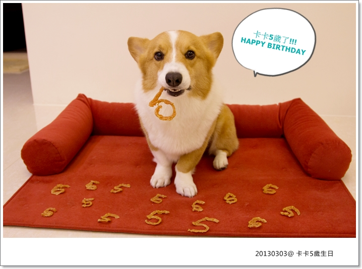
每年我自己都會回顧卡卡之前生日趴踢的文章，每每看都覺得太好笑了！XD
忠實卡粉應該跟我有同感 (?)
雖然老木我產文量很低......謝謝你們始終不離不棄，還會留言期待我發文(感動) 哈哈哈
【1歲@100號牧場】 【2歲@GOBAR】 【3歲@阿里山】 【4歲@Lulifornia】

今年的生日蛋糕是okii麻的 -->吉快樂寵物蛋糕屋
卡卡糖偶神韻雖然沒有去年那顆精細 XD，但還是非常可愛！我很喜歡
而且這間又比較好訂購，送來時的包裝也很仔細，可以減少一點蛋糕碰撞毀掉的機率

今年剛好遇到批西轟聚會在宜蘭小熊書房聚聚
順便抓了同是3月壽星的難洗乾媽一起慶生XD
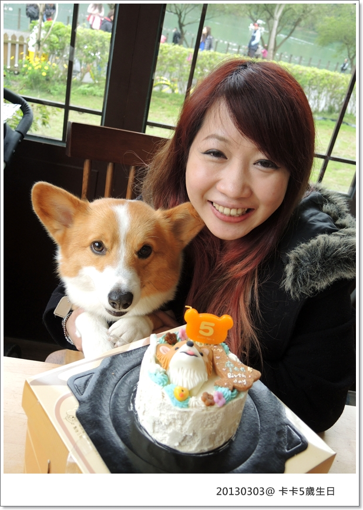
3月壽星卡卡與小摳兒
這次沒想到，下次一定要記得幫他們倆一人做一隻糖偶擺上才是一起慶生嘛！

我們幾個為了拍照快把人家整間店給掀了，超級吵的！！哈哈哈
其他客人應該傻眼這隻小狗是什麼大牌明星有必要醬嗎？

小小聲唱完生日快樂歌開嗑啦！這小子吃蛋糕都是用"舔"的沒錯
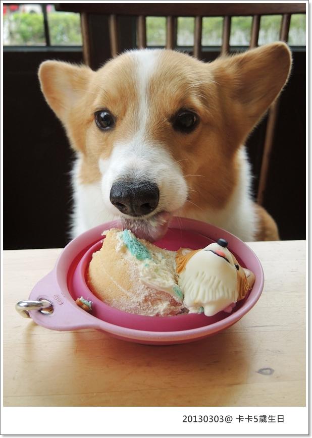
卡卡沒有被貪吃鬼上身，吃東西總是慢慢的溫溫的
其實他超急的，但又不能上桌吃得好ㄍ一ㄥ 

哈哈哈哈哈哈哈哈，3月壽星同樂
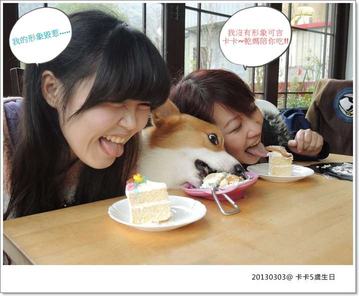
果然我們成為麻吉不是沒有道理，超放得開啊你們！！XD
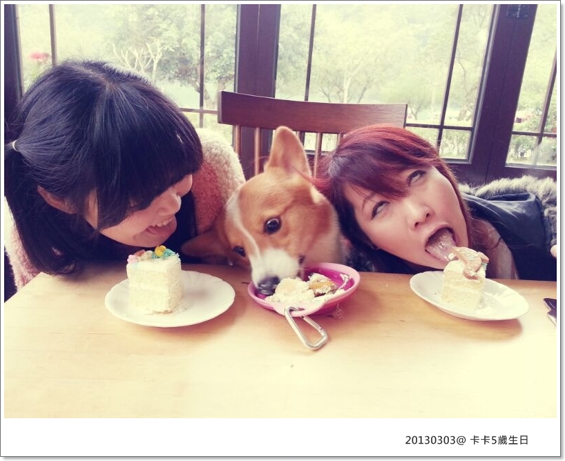
被我抺了一下奶油在鼻頭居然出現捅你眼！！可愛屎了！哈哈哈
壽星都是要被整的你不知道嗎!?
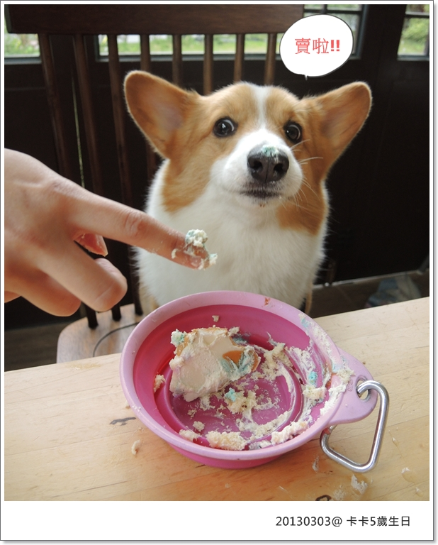
謝謝阿姨叔叔們陪卡卡過生日！！今天很開心 

================同場加映 生日禮物卡卡要陪5久久===================
去年去日本懶熊專賣店的5歲小蠟燭，立刻打包帶回家

今年雖然時間上大家無法配合所以不能同樂
謝謝醬麻跟卡內麻每年都會記得卡卡的生日，也很照顧我們天兵一家三口
放心！卡卡還有好多個生日要跟我們一起過的！
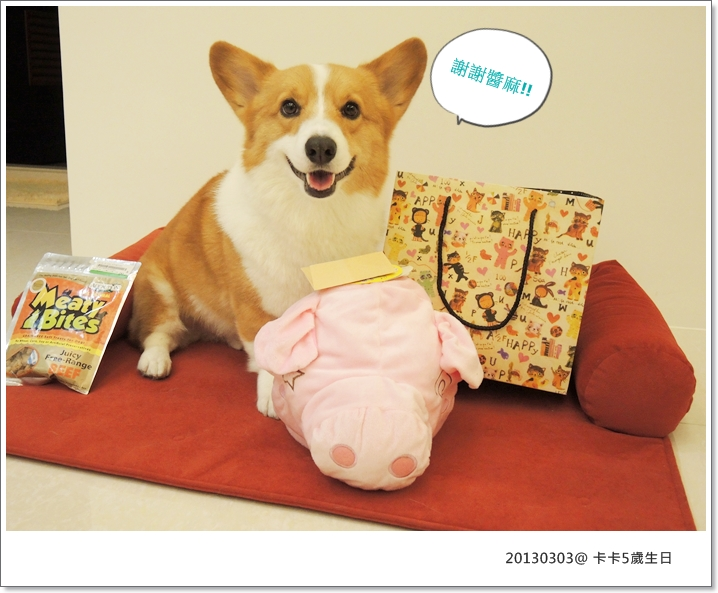
今年老北老木送的生日禮物是小紅龍床＋年度健檢
其實這床除夕前一天就衝去花花麻的寵物雜貨舖買回來了，只是順便當生日禮物(?) XD
由卡小子為各位示範怎麼躺怎麼爽的龍床
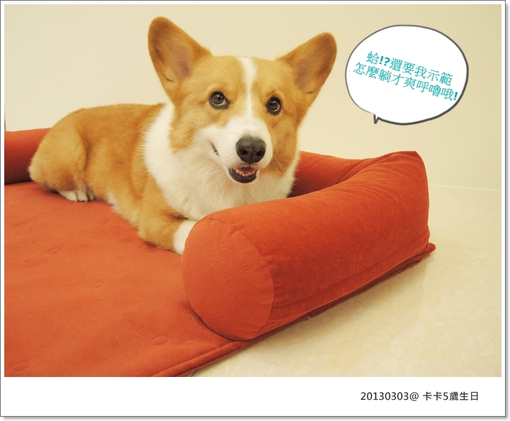
有扶手就是要用來"簣投"才會爽呼嚕，這也是吸引我買這床的重點

萌屎惹！！！！！
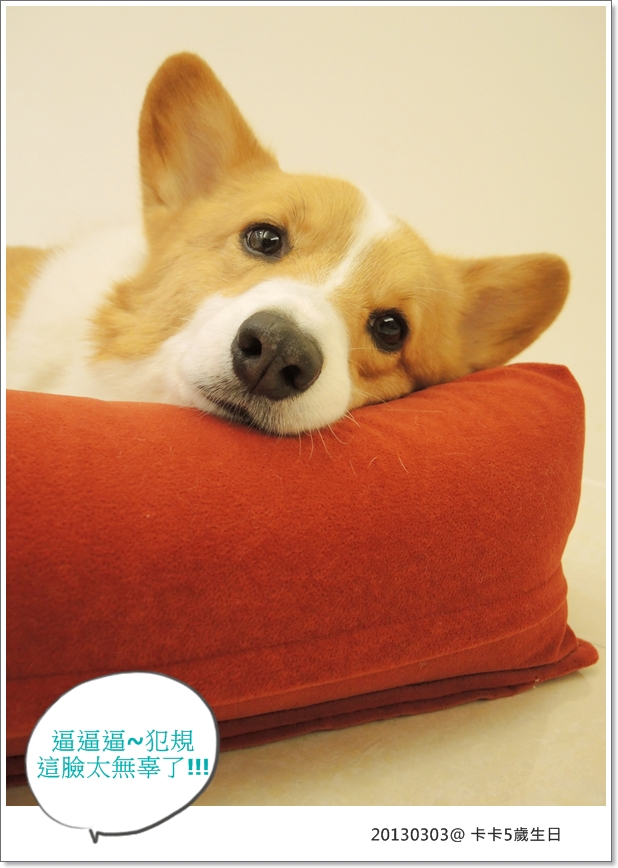
沒幾秒馬上睡著.......
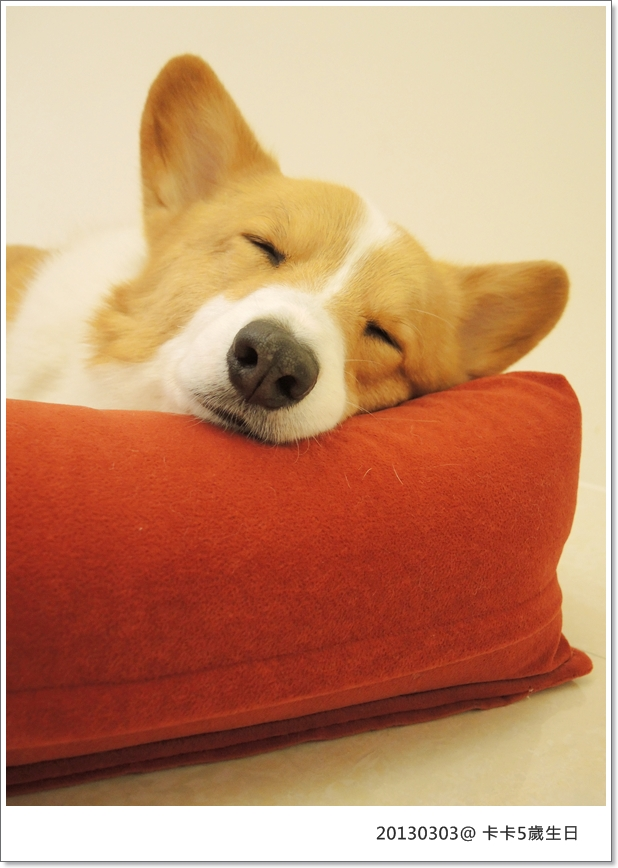
好撒嬌的臉臉兒～～～
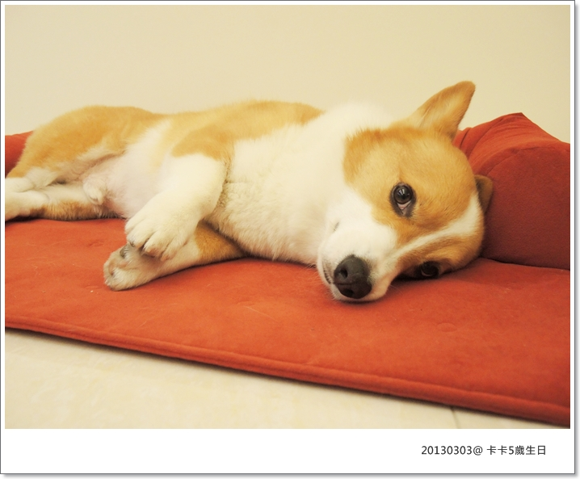
銷魂啊～～～～～

我們家的髒屎伯跟這床也好搭，抓來一起拍照
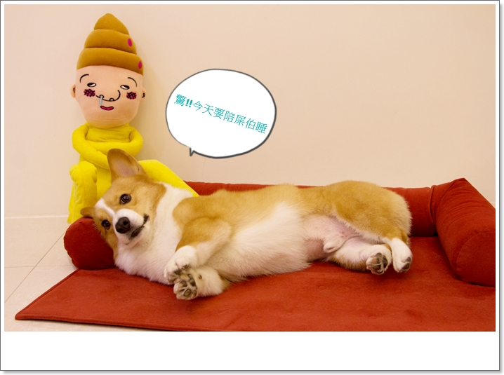
小人&小狗都不愛屎伯！！嗚嗚嗚～～屎伯好可憐........
難不成只有我覺得屎伯帥氣逼人(?) 哈哈哈哈
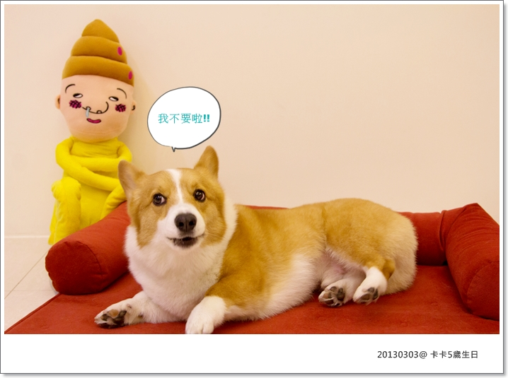
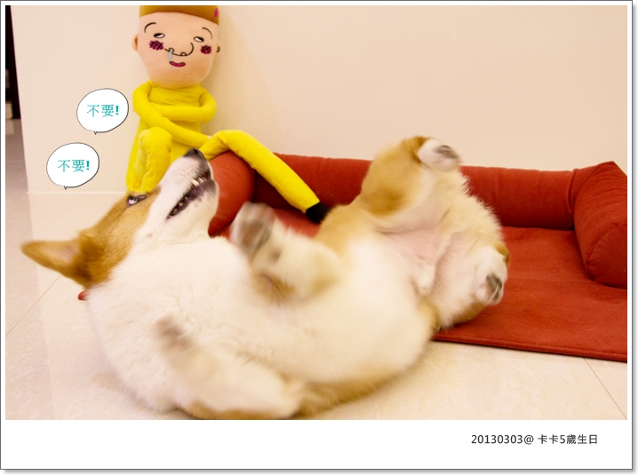
這臭小子不知道在反抗什麼.......

要說這床的缺點嘛可能就是太小，哈！滾沒幾下就出界了
現在只要洗完澡卡卡衝到床上大嚕特嚕，超爽快！

好啦！乖～和平相處嘛！！
媽媽不會買正常的東西回家啊～你忘記啦！XDDDDDDD
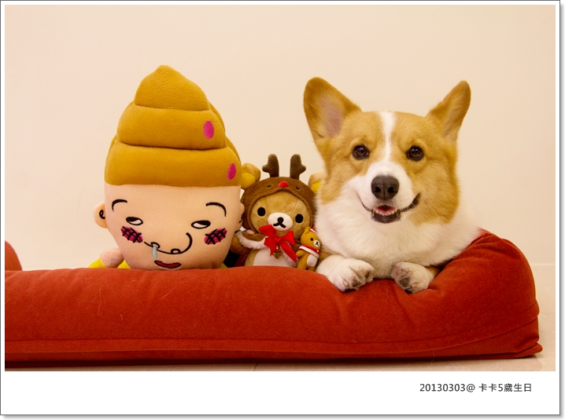
最近FD-8O 開工改烘雞肉棒，所以我順便用擠肉槍擠了一大堆的數字 5
數字跟英文字母造型的肉乾看起來有趣多了，而且好吃健康是一定的！
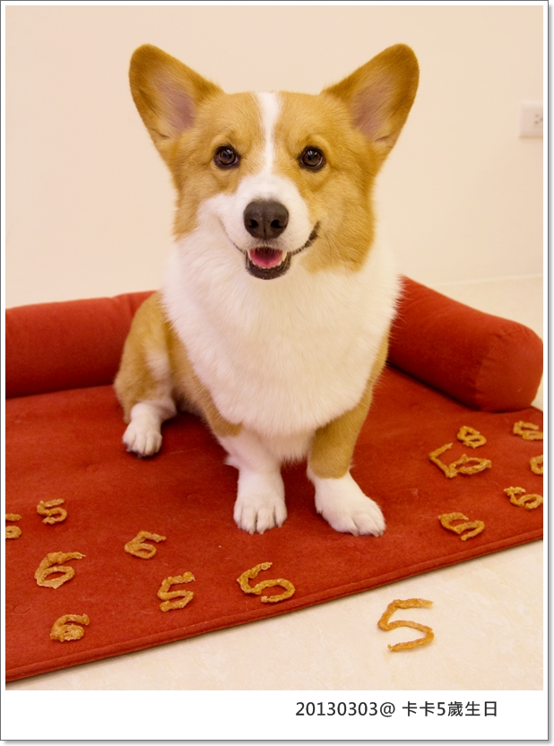
用來拍5歲生日定裝照超可愛的！！好像刁著小煙斗
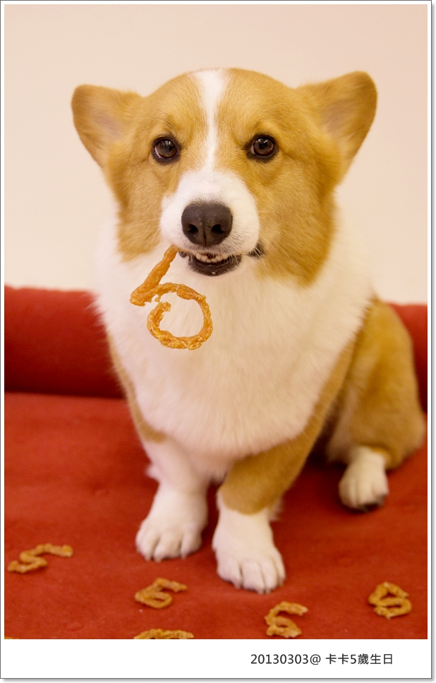
希望寶貝卡卡能陪我們 5告固～5告固～5告固～5告固～5告固～
多久都不會膩不嫌煩，愈久愈好愈久愈好

擁有你真的是最幸運幸福的事
即使沒有限制你，自己在家從不搗蛋不破壞不偷吃
出門旅行玩樂，總是能乖乖聽話配合瑪麻
在安全範圍跑再遠只要呼叫"小鳥"立刻衝回我身邊
(對！叫小鳥比叫卡卡有用200倍XD)
外表傻里傻氣但其實聰明的你，總是能很快了解我說的每句話
兒子！你的優點講都講不完，缺點我現在一個都記不起來，哈哈哈哈
壽星你最大！我們今天只說好的

來個特寫！！我好愛我兒子的小歪牙 XD
小傢伙在我眼裡看起來永遠像長不大的小幼幼，我們真的很愛很愛你！

Blog都是跟卡卡的幸福回憶，一點一點累積，這個小天地不會停止
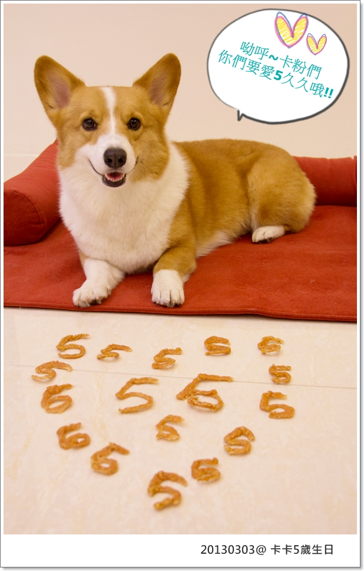